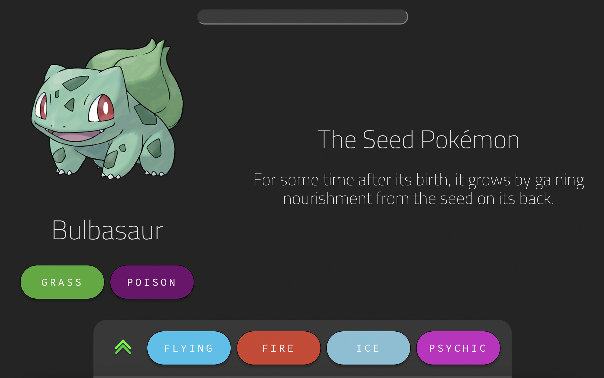

Description and Motivation
This application allowed a person to search for a pokemon and retrieve information related to that pokemon. This works similar to an encyclopedia of animals with facts ranging from observations on their physiology, behaviour, etc. This was developed using the MERN stack (MongoDB, Express, React, NodeJS). Information was retrieved from the PokeAPI, stored in a Mongo database and would subsequently be served to a React Frontend with a NodeJS backend using Express middleware. I also utilized the Go programming language to construct a service which would periodically poll the PokeAPI for new information to maintain data relevancy. The main motivation for creating this application was to gain exposure to these technologies, but in a enjoyable and approachable way.
Learnings
I haven't worked with React in years, but this was my chance in a long time to try to make a deeper dive in it so I could make a front end. Learning about React, combined with having to learn the ins and outs of using CSS was definitely a challenge. I often struggled with what I thought were basic tasks, such as positioning and sizing elements. But along the way, I gained a greater appreciation for user interface design. Making things look good isn't easy. Things that look good in your head don't always look too great when you actually make them. However, much like with other projects, the community has their own interesting approaches to make things easier to digest. For instance, I was encouraged to try using the flexbox layout in CSS, and it was supported by a plethora of guides made by developers who understood the struggle of trying to understand these components.
With React in particular, much emphasis was placed on using states in a responsible way. This would be the way that React would handle the flow of information between components; acting as their memory. I found that one of the best ways to keep state managed was actually through creating diagrams on paper. It helped to visualize the page, break it apart into modular components, and understand how the state information would flow between them. It was a learning curve, but it was worth it to get to work with a powerful framework that can simplify the front end development process.
I chose Go to make the polling service due to it's reputation for being a smart choice for creating microservices. I wanted to take advantage of Go's multithreading capabilities to make bulk data upserts into Mongo. Since my data needed to be loaded in batches, I decided to use threading for each API call, and ended up managing them using waitgroups and mutexes. As a low level language, Go was powerful, but had limitations with features that were readily available with higher level languages. For example, with JSON data, I had to marshal data directly from the responses onto structs in order to use the data. What I learned from this is to be cautious with what I can afford to take for granted when picking languages, as it can add hidden complexity when building applications.